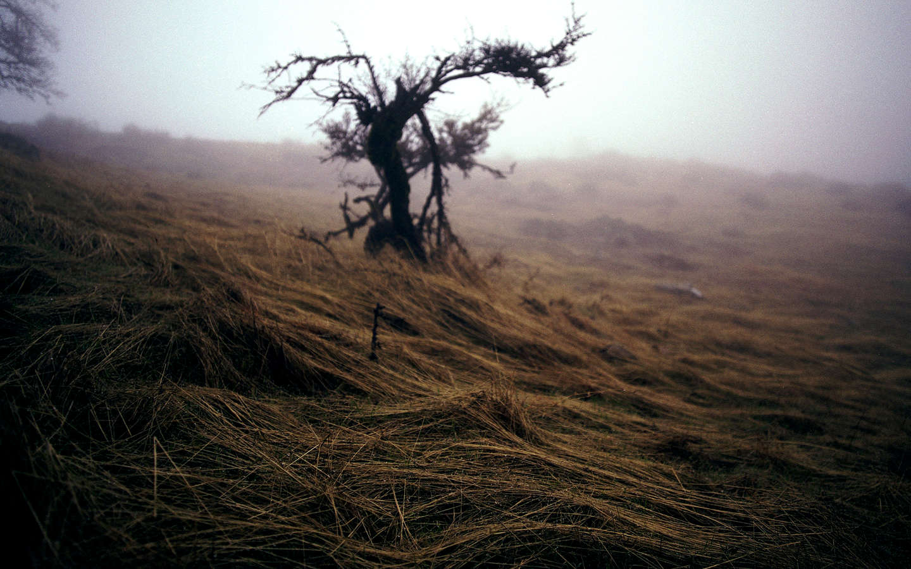

[Cold Grass, 2012]
Single Tree in resting upon a hill Mt Hamilton, 2012 [120, Ektar]
[Hillside Barn, 2010]
San Luis Obispo just off of Los Osos Valley Road there remain two abandoned and worn barns left to the elements, 2010
[Tide Reflection, 2012]
The coastal tide pools on Velvia just south of Morrow Bay, 2012
[Flowing Brook, 2011]
Long exposure of a small stream hidden beneath the oak covering of the Santa Cruz Foothills, 2011
[Rock in the Sea, 2014]
The Raw Power of the Ocean battering a lone rock upon the shores of the California Coastline, 2014